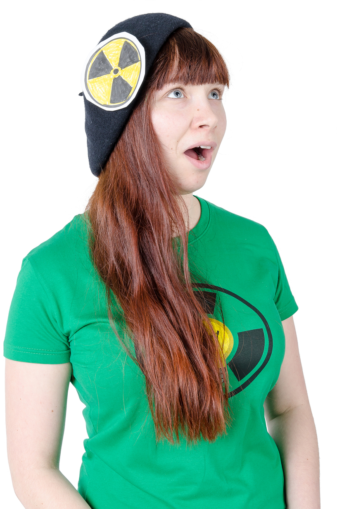

Poločas nápadu představuje Míšu
K improvizaci ji přivedla kdysi před lety láska, komu se tohle poštěstí? A jak se dostala do Poločasu nápadu? Dle svých slov ji tehdy: “Poruchová šunka zastihla v nestřeženém okamžiku.”
Míši nejoblíbenější kategorií jsou ty, ve kterých se objevují prvky sci-fi. Preferuje shortformy, protože jsou dynamičtější a zatím s nimi má víc zkušeností. Impro jí přináší program pro jinak osamělé večery, které by jinak musela trávit se svými imaginárními kamarády, kteří ji už pěkně štvou! Do budoucna by se chtěla rozvíjet hlavně ve zpěvu.